NDB Backup Procedures
You can create a backup of the notification database from either the System Management Console or from the backup commands available in the Operation/Extended Operation tabs of the Contextual pane in the management platform.
The following procedures provide step-by-step instructions for making NDB backups.
Manual Backup of NDB Data from SMC
Scenario
You want to make a backup of the NDB data using SMC.
- Ensure that your target directory has enough space. Be aware that a database may require several tons of gigabytes. The maximum supported database size is 250 GB.
- It is recommended that you store a copy of the backup on a different storage medium if you back up your data on your local computer. This prevents overflow of your local hard disk.
The backup can be incomplete or faulty if insufficient storage space is available during the backup. Therefore, it is recommended that you repeat the backup. - Ensure that a notification database is available and linked.
- In the SMC tree, select Database Infrastructure > [SQL server name] > [notification database name].
- Click Backup
 .
. - Select the Files and Paths expander.
- Click Browse at Manual backup file and select the backup folder and file name.
NOTE: For remote SQL server manually enter the backup file path. - Click Save
 .
. - Click Yes to create the backup file.
- The Task Info expander shows the backup status.
Manual Backup of NDB Data from the Management Platform
Scenario
You want to make a manual backup of the NDB data at regular time intervals from the management platform as automatic data backup is not set up.
- Ensure that sufficient storage capacity is available on the backup media. Insufficient storage capacity results in faulty data backup. Prior to starting a backup, check that there is at least 150 GB of available storage.
- System Manager is in Engineering mode.
- In System Browser, select Application View.
- Select Application > Notification.
- Click the Extended Operation tab.
- The backup function properties display.
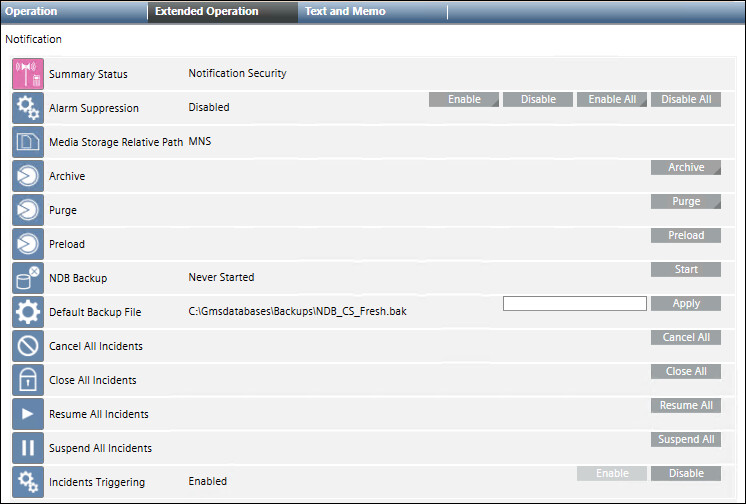
- (Optional): In the Default Backup File field, enter a new backup file name, including its complete path, and click Apply. Type the path in one of the following two ways:
- To save locally: [drive]:\[myproject]\Backups\NDB.bak
- To save on the network: \\[mycomputer]\Backups\NDB.bak
- NOTE: This also changes the entry Backup file in the Notification Data tab of the System Management Console that is available in the SMC tree under System > Database Infrastructure > [SQL Server Name] > [your NDB].
- Click Start.
- The process state goes to
Plannedduring backup. After successful completion of the backup, the display changes toSuccessfully Completedand also displays the backup date. The Last Backup information displays the backup folder and file name NDB.bak.
Manual NDB Backup Using a Macro
Scenario
You want to make a backup of the NDB database using the predefined system macro.
- In System Browser, select Application View.
- Select Applications > Logics > Macros.
- Drag and drop a Notification node in the Macro tab.
- Select NDB Backup in Property section.
- Click Save to save the macro.
- Ensure that the macro is Enabled. If not, then enable the macro by clicking the Enable button.
- In the Extended Operation tab, click Execute.
- The system begins backing up the NDB database. The default backup location is [installation drive:]\GMSBackups. Although the Last Execution Status indicates
Succeeded, it only means that the macro started successfully, it is not a confirmation that a backup was created successfully.
To ensure if the backup is created successfully, check the backup destination folder to verify the created [Project Name].bak file.
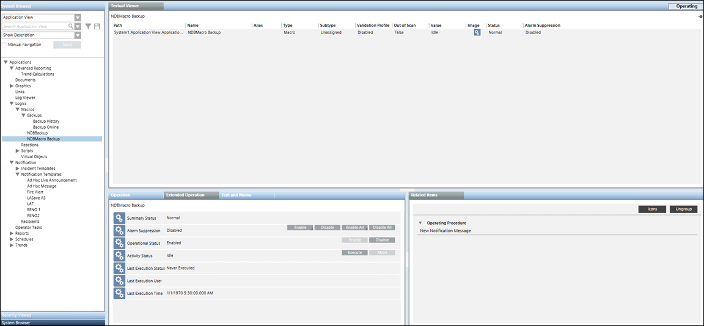
Manually Archive the Notification Data
Perform the following procedure to archive data of closed incidents. Archives store operation data in an application-independent format for historical and auditing purposes. Due to the application-independent XML format, these data can be processed further with other tools.
- Select Applications > Notification.
- Select the Operation tab.
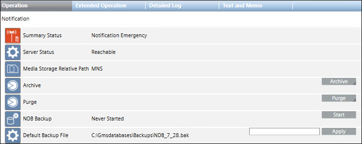
- Click Archive.
- The Destination, End Time and Start Time fields display.
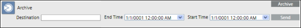
- In the Destination field, enter a file system path as the destination for the storage of archived data.
- To add a value to the End Time field, do the following:
a. Select the end date of the archiving range from the calendar.
b. Enter the end time. - To add a value to the Start Time field, do the following:
a. Select the start date of the archiving range from the calendar.
b. Enter the start time.
NOTE: The closed incidents that were initiated between the selected Start Time and End Time will be archived. - Click Send.
- The data archiving for the specified time range starts and the message
Archive in progressdisplays.
- The message
Archive successfuldisplays on completion.
Automatic Backup of NDB Data
Scenario
You want to make an automated backup of notification data using the using the Macro and Reaction Editor functions.
For specific example, see Creating a Reaction to Automatically Back Up the Project and History Database on Sunday Nights.
- A backup folder is available.
- You have enabled the Operational Status from Macro Backup History to run automatic backups.
- System Browser is in Application View.
- Select Applications > Logics > Reactions.
- The Reactions Editor tab displays.
- Select Triggers > Time & Organization Mode expander and click New.
- Click anywhere on the row.
- Additional fields to set the execution time display.
- Set the dates, days and time to execute the macro.
- From Output expander, open the Action expander.
- Drag and drop a Notification node in the Action expander.
- Select NDB Backup in Property section.
- Click Save As.
- Type the name and description in their respective fields.
- Click OK.

NOTE:
Since the older version is overwritten when creating the backup file, you must rename the backup file after creating it in order to retain multiple backup versions.
Manually Backup the Notification Database
This will create a Notification database backup at the assigned location. Perform the following procedure to backup the Notification database:
- Select Application> Notification.
- Select Operation tab.
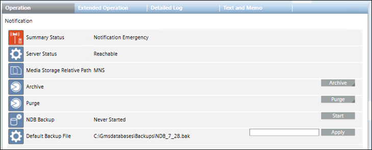
- (Optional) In the Default Backup File field, enter a new backup file name and click Apply. Type the path in one of the following two ways:
- To save locally: [drive]:\[myproject]\Backups\NDB.bak.
- To save on the network: \\[mycomputer]\bakups\NDB.bak.
- Click the Start button for NDB Backup command option.
- It will create Notification backup at the assigned location.
NOTE: Alternately, you can configure this command using macro and reaction.
Manually Purge the Notification Data
Purging is the process of deleting operations data that is no longer actively used from a system, to reduce resource consumption and maintain system performance.
Typically, operating procedures mandate an archive operation before a purge operation to avoid any data loss.
Do the following procedure to purge data from closed incidents (closed incidents cannot have any active notifications).
- Select Applications > Notification.
- Select the Operation tab.
- Click Purge.
- The EndTime and StartTime fields displays.
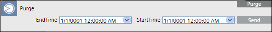
- To add EndTime, do the following:
a. Select the end date of the purging range from the calendar.
b. Enter the end time. - To add StartTime, do the following:
a. Select the start date of the purging range from the calendar.
b. Enter the start time.
NOTE: The closed incidents that were archived and initiated between the selected StartTime and EndTime will be purged. - Click Send.
- The data purging for the specified time range starts and the message
Purge in progressdisplays. Once completed, the messagePurge successfuldisplays.
Schedule the Automatic Archiving of Notification Data using Reactions
- Select Applications > Logics > Reactions.
- The Reactions Editor tab displays.
- From System Browser, drag the Notification node from Applications > Notification onto the Action expander of the Output expander.
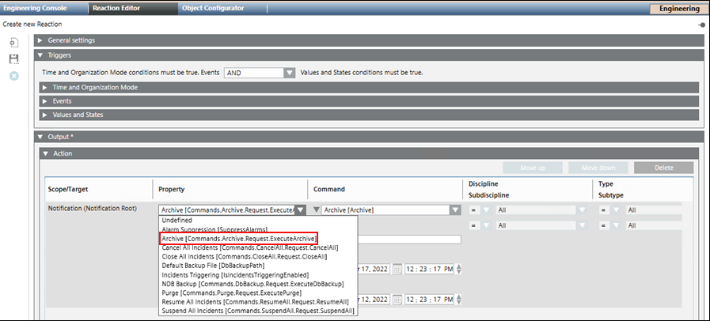
- From the Property drop-down list, select Archive [Commands.Archive.Request.ExecuteArchive].
- In the ArchiveDestination field, enter a file system path as the destination for the storage of archived data.
- Under ArchiveEndTime, do the following:
a. Select the end date of the archiving range from the calendar.
b. Enter the end time. - Under ArchiveStartTime, do the following:
a. Select the start date of the archiving range from the calendar.
b. Enter the start time.
NOTE: The closed incidents that were initiated between the selected ArchiveStartTime and ArchiveEndTime will be archived. - Open the Triggers expander, change the Time condition to OR.
- Open the Time and Organization Mode expander, click Add to add a new time row and leave all default values, or enter a time or schedule that periodically triggers the Reaction.
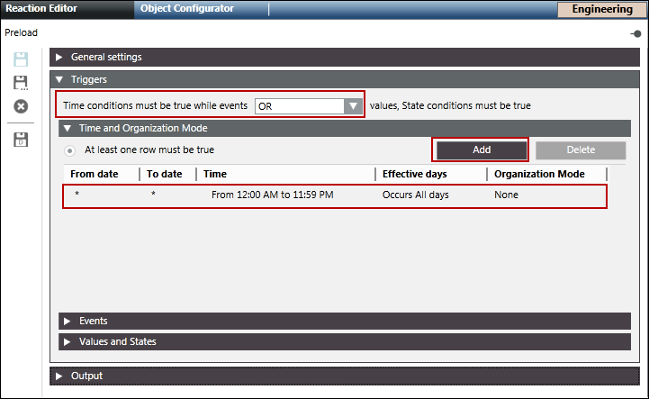
- Click Save As
 .
. - The Save Object As dialog box displays.
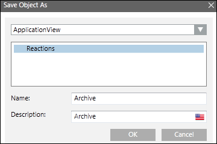
- Select Reactions and enter the name as archive.
- Click OK.
Schedule the Automatic Purging of Notification Data using Reactions
- Select Applications > Logics > Reactions.
- The Reactions Editor tab displays.
- Drag and drop the Notification node from Applications > Notification on the Action expander of the Output expander.
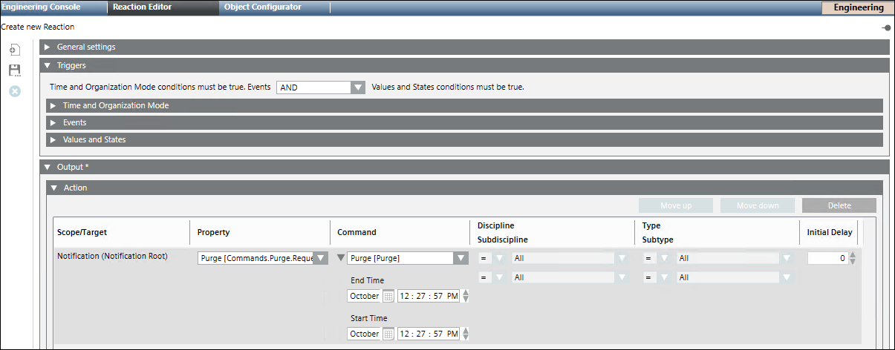
- Select Purge [Commands.Purge.Request.ExecutePurge] from the Property drop-down list.
- Under PurgeEndTime, do the following:
a. Select the end date of the purging range from the calendar.
b. Enter the end time. - Under PurgeStartTime, do the following:
a. Select the start date of the purging range from the calendar.
b. Enter the start time.
NOTE: The closed incidents that were archived and initiated between the selected PurgeStartTime and PurgeEndTime will be purged. - Open the Triggers expander.
- Change the Time condition to OR.
- Open the Time and Organization Mode expander.
- Click Add to add a new time row and leave all default values, or enter a time or schedule that periodically triggers the Reaction.
- Click Save As .
- The Save Object As dialog box displays.
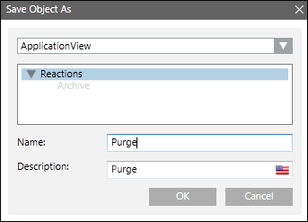
- Select Reactions and enter the name as Purge.
- Click OK.